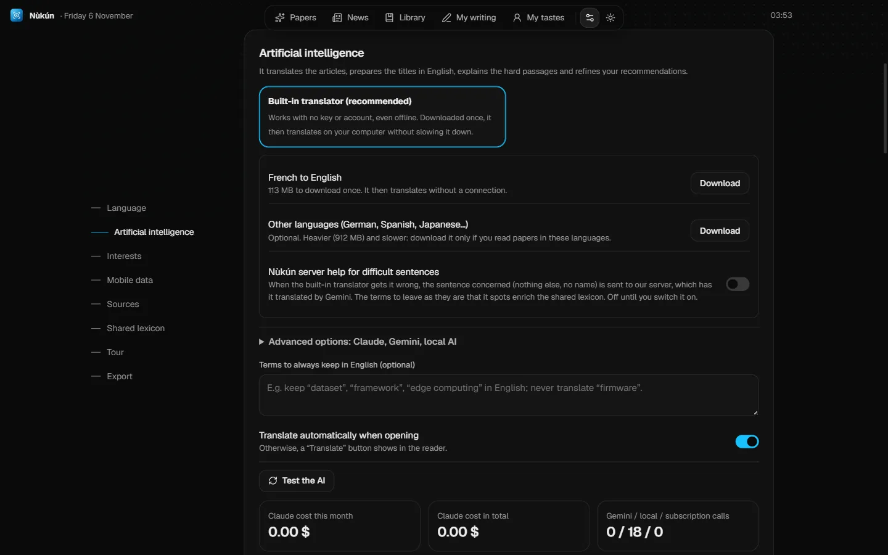
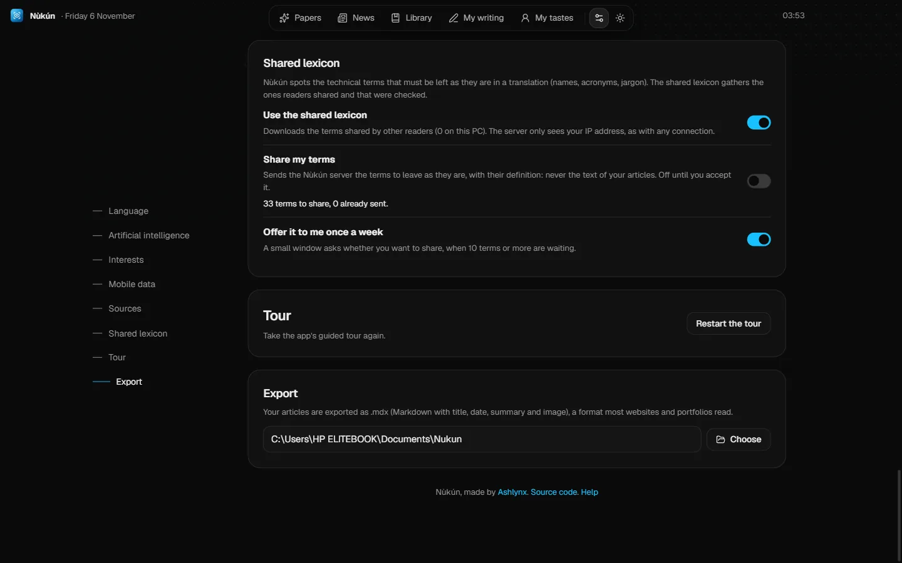

Version 1.0.2 Major update
November 2026
A built-in translator, no key or account
Nùkún no longer needs a Google key or an installed AI to translate. A small 113 MB translator downloads once, when you click “Turn on”, then works on your computer, even offline. It uses a single processor core and unloads when you stop reading: your PC does not slow down. Meanwhile, articles stay in their original language.

- English and French with the basic translator. An optional 912 MB pack adds German, Spanish, Portuguese, Russian, Japanese and Chinese.
- Lexicon terms are protected. Names, acronyms and jargon to leave as they are, and formulas, no longer go through the model.
- Server help, optional. If you tick it, sentences the small translator gets wrong are fixed by Gemini through the Nùkún server. Only those sentences are sent, and the terms it spots enrich the shared lexicon.
- Claude, Gemini and Ollama are still available under “Advanced options”, for those who already have a key or a subscription.
Good to know: the built-in translator is enough to read and understand, but it makes more mistakes than a full AI (technical words with two meanings, long sentences, nuance) and it cannot explain or discuss a paper. The AIs under advanced options are what let you make the most of Nùkún.
For details, see the help and the Privacy page.
The shared lexicon
When Nùkún translates a paper, some terms must not be translated: names, acronyms, the jargon specialists leave as it is. Nùkún spots them and remembers them. From now on, the ones readers choose to share, once checked, serve everyone else too.

- Downloaded by default. The published terms help translate consistently. A switch in Settings, Shared lexicon, turns it off.
- Sharing is optional, and off until you say yes. A small window offers it at most once a week, from 10 terms, with the full list before anything is sent. Never the text of your articles, your notes or your name.
- Checked, not a dictionary. Each term is checked by an AI, then published only if several different readers sent it. Common words that have a translation do not go in.
- For both languages. A term shared by a French reader can serve English readers, with a definition written for them.
For the details, see the help page and Privacy.
Claude only if you allow it
The built-in translator is the default mode. Your Claude subscription is used only if you choose a mode that includes it (Hybrid, My Claude subscription or Automatic), and each says so on its card. Installations that had the old default move to the built-in translator.
A finer translation
The AI now receives the meaning of each glossary term and applies it only where the word has that meaning: a technical word left as it is in one context is still translated when it is used in its ordinary sense.
Also
- The Papers page is called "Your reading feed", since your feed is not limited to science.
- Drop-down lists in the app's colours, usable with the keyboard.